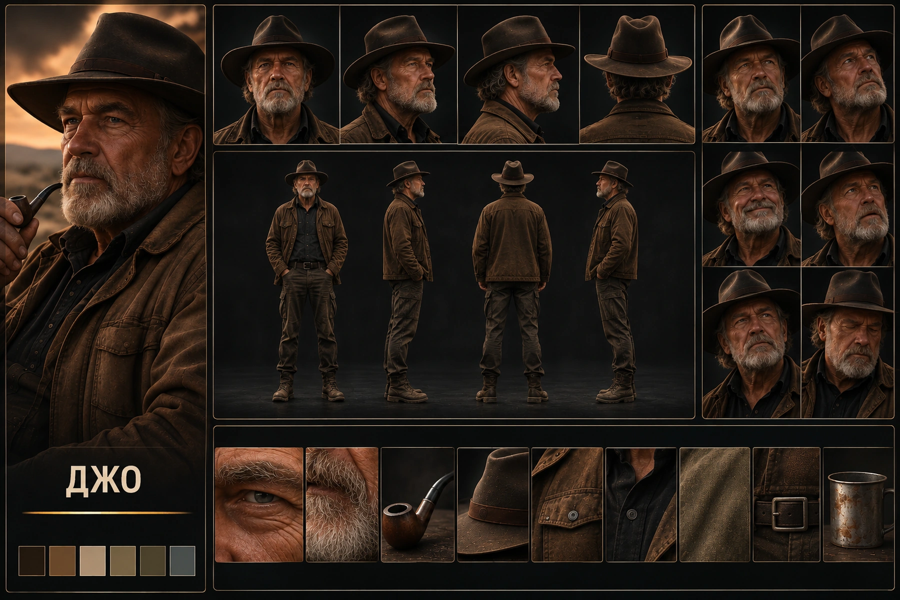

OVERVIEW
An inhabitant of a distant world
Joe has lived on a distant planet for almost two hundred years. His world remained isolated for a long time, while the Three-Day Law restricted the inhabitants’ ability to relocate.
Name: Joe
Home: a distant planet
Time on the planet: almost two hundred years
Connection to Isaac: they have known each other for almost two centuries
Age: not specified in the reviewed passages
Special abilities: not specified in the reviewed passages
ISAAC · YEARS OF SUPPORT
A friendship tested by time
Isaac has known Joe for almost two hundred years. During that time, he regularly brought water, medicine and equipment to the planet. When an inhabitant fell ill, Isaac took them to a medical facility for treatment and returned them home after recovery.
These visits could not become permanent resettlement. The Three-Day Law required visitors to return to their own world after a short stay on another plan. As a result, the planet’s inhabitants remained there even when they needed help or wanted to leave.
EVACUATION · A NEW POSSIBILITY
A route to the resort planet
After the Kharakternyky of the Zero and First Plans united, the ability to transfer people between plans also became available to the Zero Plan. Isaac received permission to evacuate the inhabitants of the distant planet.
He returned to Joe with the possibility of leaving that world permanently. Everyone who remained there was evacuated — a little over one hundred people. The manuscript passage specifies the number as 103 inhabitants. Their new home was the resort planet.
ROLE IN THE STORY
The consequences of the Three-Day Law
Joe’s story shows the human cost of inter-planar restrictions: even a long friendship and regular assistance could not make it possible to simply move people to a safer place. Evacuation became possible only after the rules changed and the Kharakternyky of the Zero Plan gained the necessary ability.
The reviewed passages do not establish Joe’s occupation, exact age or any supernatural abilities. These details are not added without textual support.